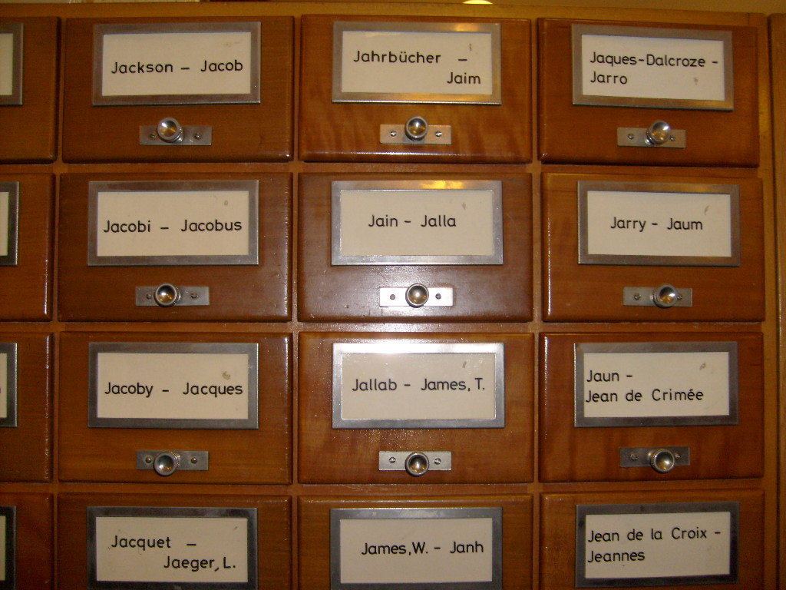

No errors. Worse answers.
Silent Failures is a benchmark that breaks RAG retrieval on purpose, then tests which label-free signals notice before users do.
Read the codeOne window, four stops
- Dataset
- NFCorpus test
- Queries
- 100 of 323
- Reference
- separate 100
First we sample a window of 100 queries.
- Dataset
- NFCorpus test
- Failure
- F1, severity 30%
- Swapped
- 1,089 of 3,633 vectors
Then we break the index at a set severity.
- Sees
- queries, top-10, index
- Never sees
- relevance labels
- Re-embed
- 58 / 200 mismatched
- Top-1 mean
- 0.505
Detectors score it from logs alone.
- nDCG@10 drop
- 0.032
- Paired bootstrap
- p = 0.001
- Harmful
- yes
Last, the labels say whether it really hurt.
Five ways to break it
Each failure runs at 10% to 90% of the corpus or query traffic. The harmless changes tell us how often a detector cries wolf.
Failures
- F1 Partial embedding upgrade: two models’ vectors in one indexOct 31
- F2 Stale documents: outdated content beside its replacementOct 31
- F3 Chunking change on part of the corpusOct 31
- F4 Query shift toward topics the corpus lacksOct 31
- F5 Config mismatch between index and queriesOct 31
Harmless changes
- Reordering the rows of the indexcandidate
- Mixing 256- and 512-token truncationcandidate
- Final set chosen with the team in issue #9Oct 31
Datasets
- NFCorpus, 3,633 medical documents: all tuningdev
- SciFact, 5,183 scientific abstractsheld out
- FiQA, 57,638 financial forum postsheld out

Detectors
Re-embed a sample and compare.
Prototype F1 run: AUROC 1.000, every harmful window caught at 10%, 30% and 50%.
Classify the retrieved documents.
Prototype F1 run: AUROC 0.907 for the retrieved-docs domain classifier.
Classify the incoming queries.
AUROC 0.510 on F1, as it should be: F1 never touches the queries.
Watch the top-1 similarity score.
Mean top-1 falls from 0.523 to 0.431 at 90%. PSI and KS detectors land Nov 11.
Ask an LLM to judge the results.
Planned for Nov 18, with the cost of every check recorded.
nDCG@10 lost, zero errors
NFCorpus, all 323 test queries, as more of the index is re-embedded with all-MiniLM-L6-v2 while queries stay on multi-qa-MiniLM. At 10% the drop on a 100-query window is only 0.013, and the paired bootstrap already calls it significant (p = 0.025).
Try a query
Where we are
We are four DS5500 students at Northeastern, and we started with one question: when retrieval in a RAG system quietly gets worse, which of the cheap, label-free signals teams already watch would actually tell you?
The pipeline, the runner and the baseline are done. With multi-qa-MiniLM-L6-cos-v1, title and text cut at 256 tokens, clean nDCG@10 is 0.292 on NFCorpus, 0.546 on SciFact and 0.360 on FiQA. A window of 100 queries is enough for the bootstrap to catch a drop of about 0.06 in 80% of windows.
The numbers on this page come from a prototype of F1. The real injectors and detectors land over the next four weeks: all five failures by Oct 31, drift and score-based detectors by Nov 11, canaries, re-embedding and the LLM judge by Nov 18.
On Nov 24 we run everything once on SciFact and FiQA, which nothing has been tuned on, and the detector-by-failure heatmap goes here. The benchmark, a monitoring guide and the report ship on Dec 1.
Srikar Manda, Alekhya Bulusu, Shane Hussey and Ying-Jen Chiang
DS5500 Capstone, Fall 2026